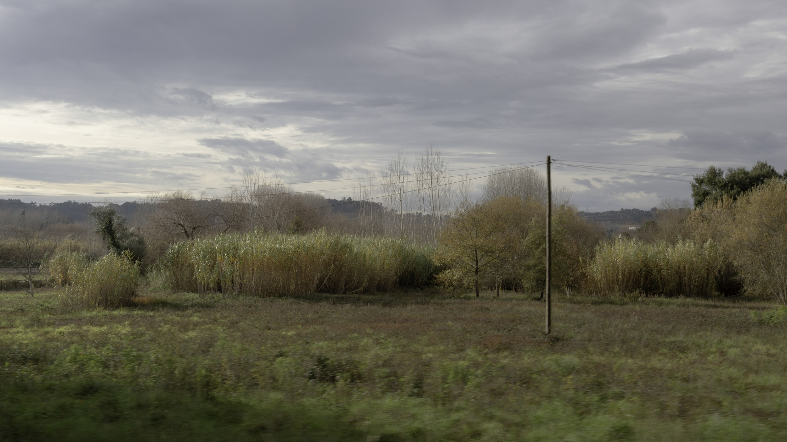
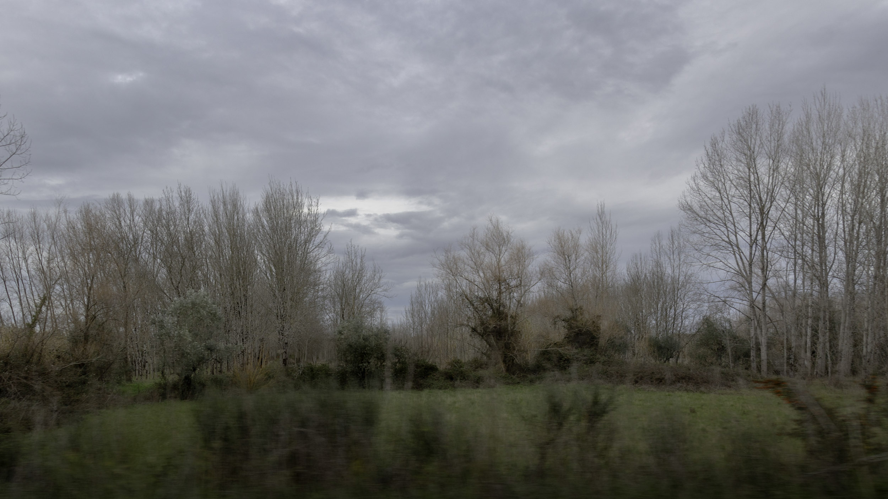
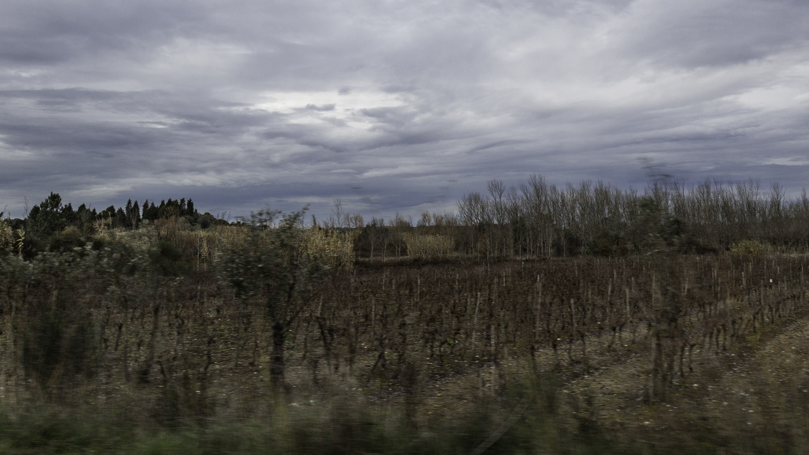
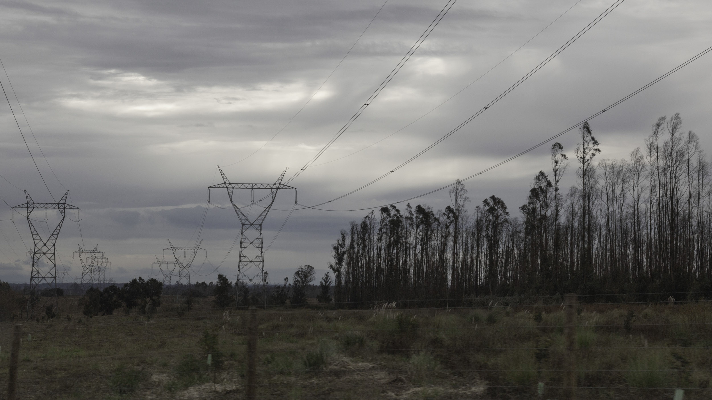
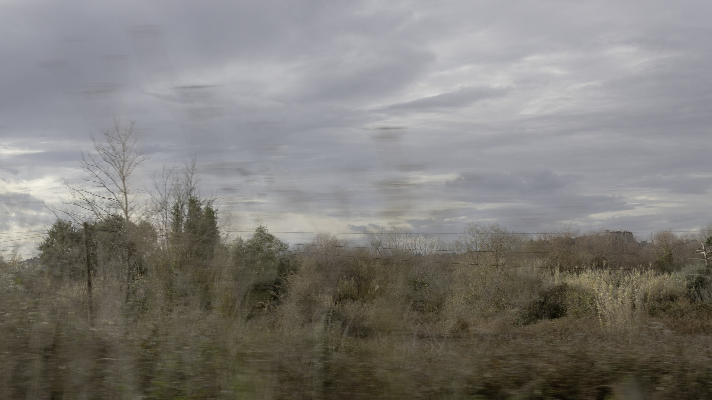

Paisagem em Movimento
Imagens realizadas em trânsito. A paisagem surge interrompida pela velocidade,
pela distância e pelo movimento do olhar. Mais do que descrever um lugar,
estas fotografias registam a experiência de o atravessar.




